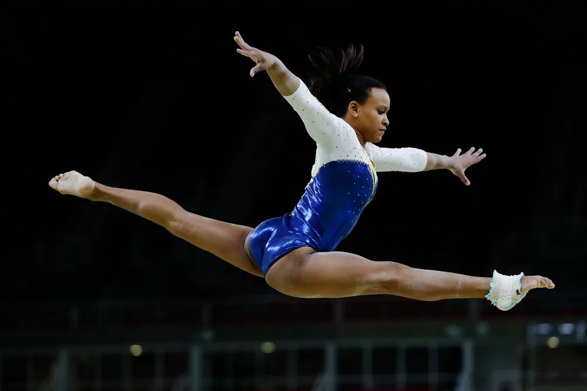
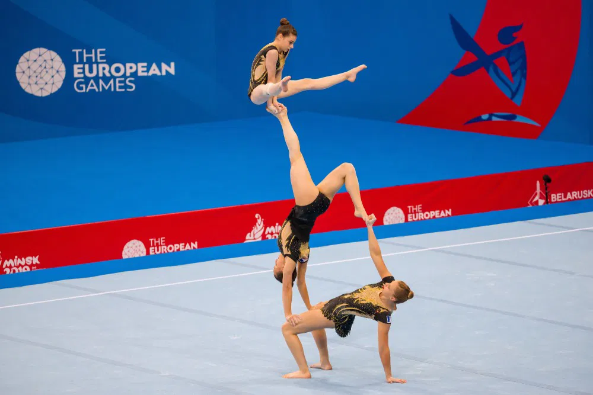
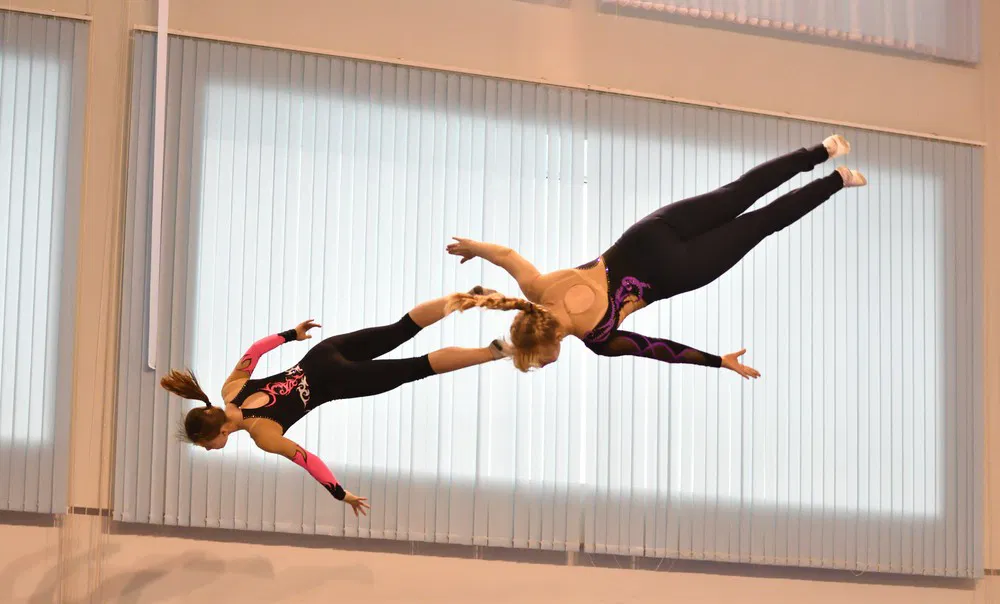
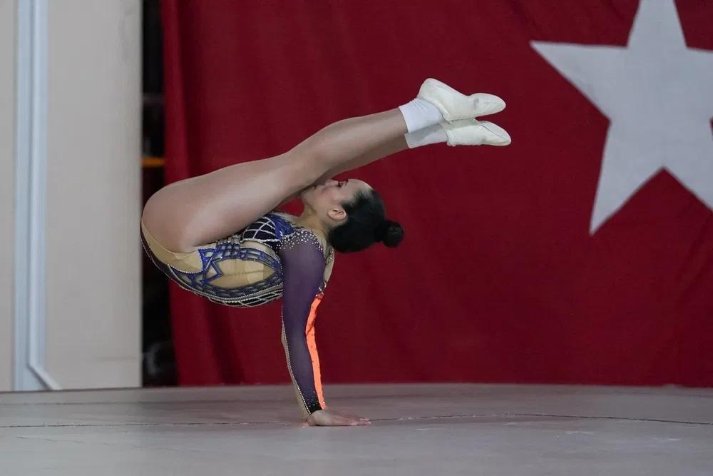

Quais são os 7 tipos de ginástica?
Os sete tipos de ginástica, segundo a Federação Internacional de Ginástica (FIG), são:
- Ginástica artística feminina;
- Ginástica rítmica;
- Ginástica de trampolim;
- Ginástica aeróbica;
- Ginástica acrobática;
- Ginástica para todos.
Ginástica artística
A ginástica artística é uma modalidade que exige muita força, equilíbrio e forte domínio técnico para realizar movimentos com precisão.
As competições são realizadas em equipe e individualmente, por mulheres e homens, em vários aparelhos. São eles: argolas, barras assimétricas, barras de equilíbrio, barra fixa, barras paralelas e cavalo. Há ainda categorias sem aparelhos, em que se compete no solo.
É a modalidade mais conhecida da ginástica esportiva, especialmente pelo destaque das equipes brasileiras nos últimos anos. Atletas conhecidos, como Diego e Daniele Hypólito, Daiane dos Santos e Rebeca Andrade competiram e competem na modalidade.
Ginástica rítmica

A ginástica rítmica é uma modalidade que, além da técnica exigida pela própria ginástica, também utiliza elementos de outras artes, como o balé, a dança, o teatro e a música.
Os aparelhos usados são o arco, a bola, a fita e as maças. É uma modalidade que exige força, flexibilidade, elegância, agilidade e entrosamento entre as atletas para realizar movimentos em sincronia.
As competições de ginástica rítmica podem ser disputadas em equipes ou individualmente. Em grandes competições, como nas Olimpíadas, só é aceita a participação feminina.
Ginástica acrobática
Como o nome diz, a ginástica acrobática tem como principal elemento as acrobacias realizadas pelos atletas. Tem forte influência da arte de circo, sendo uma modalidade em que a força e o equilíbrio são de extrema importância.
É executada em pares ou em grupos. Podem ser pares femininos, masculinos e mistos ou grupos masculinos e femininos. Os grupos, geralmente, são compostos por três 3 pessoas, divididas nas funções de base, intermédios e volantes.
Também é comum nas competições em grupo, que os participantes tenham alturas e idades bem distintas. A ginástica acrobática não é uma modalidade olímpica.
Ginástica de trampolim
A ginástica de trampolim é comporta principalmente por saltos e acrobacias feitas sobre um trampolim, um tipo de cama elástica. Assim como a ginástica acrobática, também tem grande influência das artes circenses.
A modalidade exigem força, especialmente nas pernas, controle corporal e flexibilidade. É executada em competições masculinas e femininas, e há a prática sincronizada, em que dois atletas, em trampolins diferentes, realizam os mesmos movimentos ao mesmo tempo.
Ginástica aeróbica
A ginástica aeróbica tem grande influência da música e da dança, exige controle corporal, força e graça durante a execução dos movimentos.
Ainda não é um esporte olímpico, mas as competições podem ser individuais, em pares (mistos) ou grupos (que podem ser 3 ou 5 pessoas). As execuções competitivas costumam ser ágeis, alegres e com muita musicalidade.